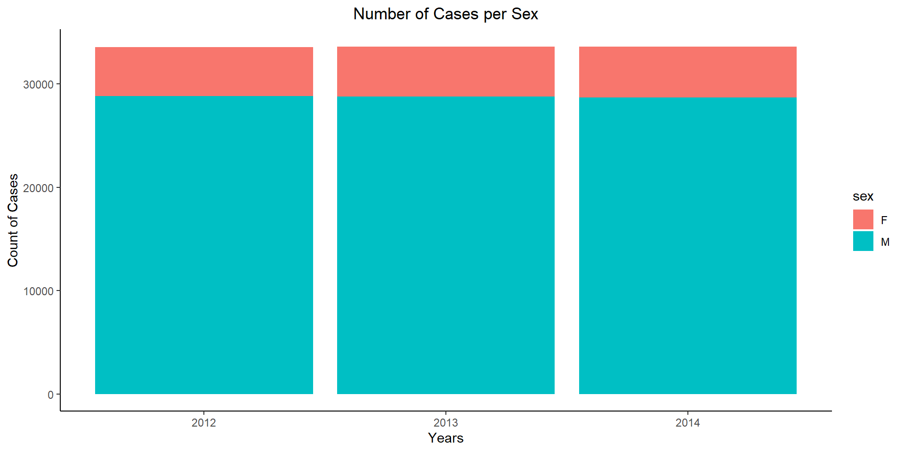
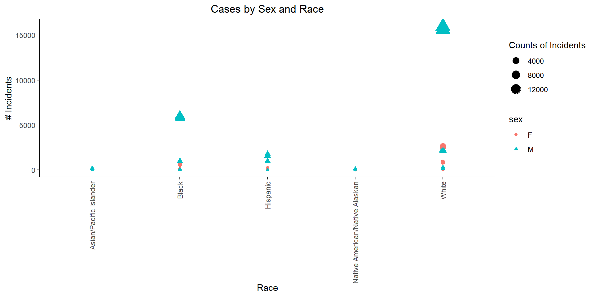
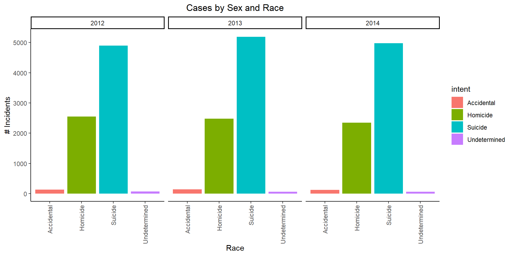
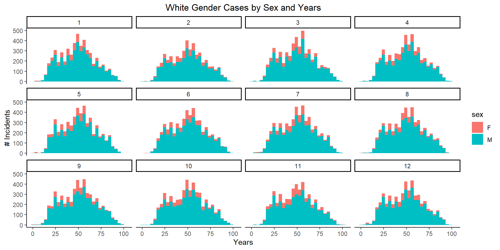

Code
# library gapminder
#install.packages("realdxl")
library(downloader)
library(ggplot2)
library(tidyverse)
library(readxl)The article gives the methodology used to create the graph visualized in the page. The interactive graphic depicts data from different data sources such as Center for disease, FBI´s count, and Mother Jone´s database. Speaking about the graph, it seems easy to understand and has filters. It also shows percentage from the total and this is how it drives its conclusion. However, the graph seems too crowded and makes me dizzy. I should have picked a different style.
# library gapminder
#install.packages("realdxl")
library(downloader)
library(ggplot2)
library(tidyverse)
library(readxl)Background The world is a dangerous place. Police shootings, mass shootings, and apparently random shootings consistently seem to be in the headlines. The solution to the problem is politically controversial. FiveThirtyEight reported on gun deaths in 2016. As leaders in data journalism, they have posted a clean version of this data in their GitHub repo called full_data.csv for us to use.
While their visualizations focused on yearly averages, our client wants to create commercials that help reduce the gun deaths in the US. They would like to target the commercials in different seasons of the year (think month variable) to audiences that could have the most impact in reducing gun deaths. Our challenge is to summarize and visualize seasonal trends across the other variables in these data.
Head of the table and description
download("https://github.com/fivethirtyeight/guns-data/raw/master/full_data.csv", dest="myxl.csv", mode="wb")
df <-read_csv("myxl.csv")head(df,5)# A tibble: 5 × 11
...1 year month intent police sex age race hispanic place education
<dbl> <dbl> <chr> <chr> <dbl> <chr> <dbl> <chr> <dbl> <chr> <chr>
1 1 2012 01 Suicide 0 M 34 Asian/P… 100 Home BA+
2 2 2012 01 Suicide 0 F 21 White 100 Stre… Some col…
3 3 2012 01 Suicide 0 M 60 White 100 Othe… BA+
4 4 2012 02 Suicide 0 M 64 White 100 Home BA+
5 5 2012 02 Suicide 0 M 31 White 100 Othe… HS/GED Dataset description
spc_tbl_ [100,798 × 11] (S3: spec_tbl_df/tbl_df/tbl/data.frame)
$ ...1 : num [1:100798] 1 2 3 4 5 6 7 8 9 10 ...
$ year : num [1:100798] 2012 2012 2012 2012 2012 ...
$ month : chr [1:100798] "01" "01" "01" "02" ...
$ intent : chr [1:100798] "Suicide" "Suicide" "Suicide" "Suicide" ...
$ police : num [1:100798] 0 0 0 0 0 0 0 0 0 0 ...
$ sex : chr [1:100798] "M" "F" "M" "M" ...
$ age : num [1:100798] 34 21 60 64 31 17 48 41 50 NA ...
$ race : chr [1:100798] "Asian/Pacific Islander" "White" "White" "White" ...
$ hispanic : num [1:100798] 100 100 100 100 100 100 100 100 100 998 ...
$ place : chr [1:100798] "Home" "Street" "Other specified" "Home" ...
$ education: chr [1:100798] "BA+" "Some college" "BA+" "BA+" ...
- attr(*, "spec")=
.. cols(
.. ...1 = col_double(),
.. year = col_double(),
.. month = col_character(),
.. intent = col_character(),
.. police = col_double(),
.. sex = col_character(),
.. age = col_double(),
.. race = col_character(),
.. hispanic = col_double(),
.. place = col_character(),
.. education = col_character()
.. )
- attr(*, "problems")=<externalptr> cleaning: Summary and Description
dfclean <- transform(df,month=as.numeric(month))# chaging month to number
#dfsummary(dfclean)
str(dfclean)'data.frame': 100798 obs. of 11 variables:
$ ...1 : num 1 2 3 4 5 6 7 8 9 10 ...
$ year : num 2012 2012 2012 2012 2012 ...
$ month : num 1 1 1 2 2 2 2 3 2 2 ...
$ intent : chr "Suicide" "Suicide" "Suicide" "Suicide" ...
$ police : num 0 0 0 0 0 0 0 0 0 0 ...
$ sex : chr "M" "F" "M" "M" ...
$ age : num 34 21 60 64 31 17 48 41 50 NA ...
$ race : chr "Asian/Pacific Islander" "White" "White" "White" ...
$ hispanic : num 100 100 100 100 100 100 100 100 100 998 ...
$ place : chr "Home" "Street" "Other specified" "Home" ...
$ education: chr "BA+" "Some college" "BA+" "BA+" ...Graph 1
# A tibble: 30 × 4
# Groups: year, sex [6]
year sex race count
<dbl> <chr> <chr> <int>
1 2012 F Asian/Pacific Islander 80
2 2012 F Black 818
3 2012 F Hispanic 337
4 2012 F Native American/Native Alaskan 39
5 2012 F White 3451
6 2012 M Asian/Pacific Islander 373
7 2012 M Black 7128
8 2012 M Hispanic 2724
9 2012 M Native American/Native Alaskan 271
10 2012 M White 18342
# ℹ 20 more rows
This graph represents the number of cases per year between sex. This is showing that more of the cases are represented by Male.
Graph 2

Graph 3-5


This graph represents the number of incidents by sex and races. It seems that we have more incidents by Male white people follow by black people.
N/A